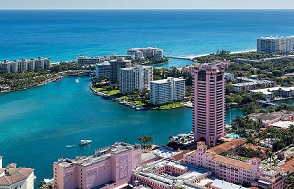
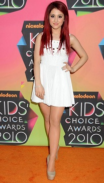
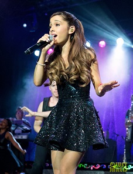
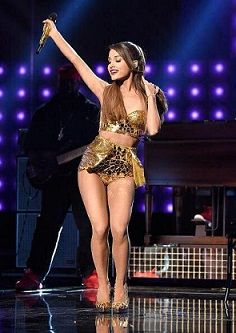
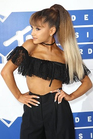
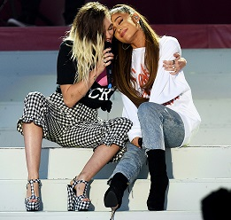

|

|

|

|
Biografía
|
|
 title="Ciudad de Boca Ratón/Florida"
|
1993-2008: Primeros años e inicios de su carrera artística.
Grande nació el 26 de junio de 1993 en Boca Ratón , ciudad natal de Grande (estado de Florida).
Se le llama así en alusión a la princesa Oriana, de la caricatura Félix el Gato. Tiene nacionalidad estadounidense, italiana y británica al mismo
tiempo. Asistió a las escuelas...
|
|
2010-2012: Victorious y otros trabajos con Nickelodeon.
Grande audicionó para la serie de Nickelodeon, Victorious
en Nueva York, junto a su compañera de reparto de 13, Elizabeth Gillies, en 2009. En esta
sitcom basada en una escuela de artes escénicas llamada Hollywood Arts, Grande interpretó a Cat Valentine. A petición del productor ejecutivo
Dan Schneider tuvo que teñirse el cabello...
|
 title="Ariana Grande at the kids choice awards in 2010"
|
|
 title="Ariana Grande in the Listening Session Tour"
|
2012-2014: Carrera musical y reconocimiento mundial.
Grande grabó su primer álbum de estudio, 2012-2014: Yours Truly,
durante tres años. Luego de completar el álbum, originalmente llamado Daydreamin,
fue publicado el 17 de noviembre de 2012. Yours Truly debutó en la primera posición en el Bilboard 200,
con ventas superiores a 138 000 copias en su primera semana. Tras el éxito del álbum, Grande se convirtió en dicho añi en la primer...
|
|
2014-2016 My Everything, gira mundial y otros trabajos. Para enero de 2014,
Grande estuvo trabajando en su segundo álbum de estudio junto a Ryan Tedder y Benny Blanco.
Poco después ganó los People's Choice Awards luego de ser galardonada «artista revelación
favorito». El 4 de marzo de 2014, el presidente de los Estados unidos Barack Obama
y la primera dama Michelle Obama, invitaron a Grande...
|
 title="Ariana Grande at the AMAs in 2014"
|
|
 title="Ariana Grande at the MTVs in 2016"
|
2016-2017 Tercer álbum de estudio: Dangerous Woman.
Al año siguiente, cantó «Just a Little Bit of Your Heart» en los Grammy Awards de 2015, donde obtuvo dos nominaciones.
Poco después, rindió homenaje a Stevie Wonder
en un concierto especial organizado por los Grammy, que sirvió...
|
|
Actualidad. El 22 de mayo hubo una explosión durante uno de
sus conciertos en el "Manchester Arena" en Mánchester/Reino Unido. La policía confirmó el asesinato
de 22 de personas y más de 50 heridos. Debido a ello tuvo que suspender la gira mundial que estaba realizando, Dangerous
Woman Tour, y se ofreció a pagar el funeral de las víctimas que perecieron en el atentado...
|
 title="Ariana Grande and Miley Cyrus in the One love Manchester concert"
|